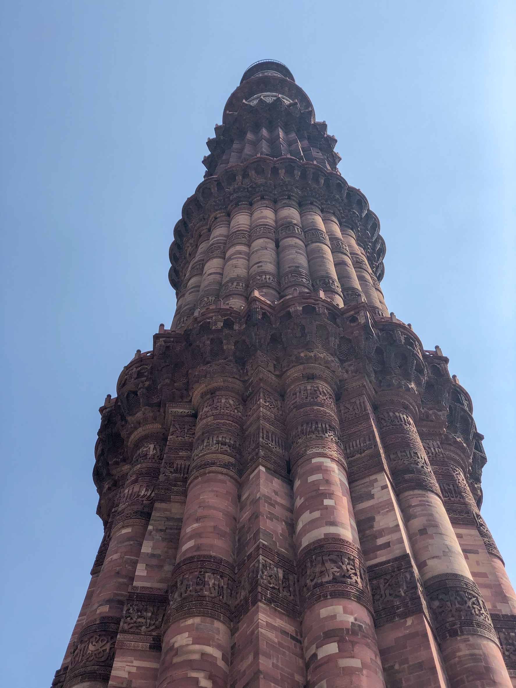

〇レッドフォート
さっそくおすすめの観光地をご紹介していきます！
まずはじめはレッドフォートになります。私がおすすめする理由は、その敷地面積の大きく、敷地内にいろいろな建物があるからです。レッドフォートは王朝の屋敷がある処で、日本で言うお城のように周りを赤い壁で守っています。インドの独立記念日に毎回首相がレッドフォートで演説を行う有名な場所です！
下にレッドフォートの外観を載せておきます！ぜひご覧になって下さい！

さらに知りたい方は↓にウィキペディアのリンクを張っておくのでご覧下さい！
レッドフォートの詳しいサイトへのリンク〇クトブ・ミナール
次に「クトブ・ミナール」についてご紹介していきます！
私がおすすめする理由は、高さが約７２mあり、その中の構造が円形になっており、その円に合わせて階段を張り巡らせ内側から塔を建築した建築構造が特徴的な点です。今現在は塔を上ることはできませんが、塔やその周りの建造物に非常に歴史を感じることが出来ます！
下にクトブ・ミナールの外観を載せておきます！ぜひご覧になって下さい！

さらに知りたい方は↓にウィキペディアのリンクを張っておくのでご覧下さい！
クトブ・ミナールの詳しいサイトへのリンク〇ロータステンプル
次に「ロータステンプル」についてご紹介していきます！
私がおすすめする理由は、外観がコントラストで非常に美しい造りになっている点です。テンプルということもあり、テンプルの中に入ることが出来るのですが、何か別空間に入ったかのように感じられるほど、静かです！
下にロータステンプルの外観を載せておきます！ぜひご覧になって下さい！
さらに知りたい方は↓にウィキペディアのリンクを張っておくのでご覧下さい！
ロータステンプルの詳しいサイトへのリンク猿がジュースを自分で飲む動画
公園に行ったときに偶然猿がジュースを自分で飲んでいたので動画に収めました。日本では見られないと思ったので載せておきます。
以上が私がおすすめするデリーの観光地の紹介になります。見てくださりありがとうございました。
トップに戻る